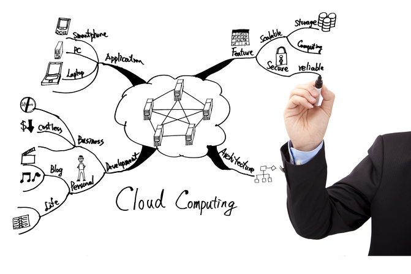
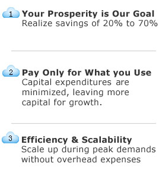

Welcome
NetCloud Inc. is a cloud-computing based computer hosting company headquartered in Fremont, California. The company’s primary focus, although it offers a full array of information technology services, is the provision of full hosting services to small, medium and emerging companies looking for state of the industry technology capability at surprisingly low costs.
Our goal at NetCloud is to help you dramatically reduce your IT budget while realizing numerous technology and productivity enhancements.

Our Full Service Co-sourcing of Information Technology is designed to create a more robust and efficient IT function by partnering with our clients in order to augment internal resources in whatever way is needed. Our clients are able to rely on our IT expertise and resources as a supplement, complement, or replacement for internal staff. Unlike outsourcing, which would simply move a task or process out of the organization, co-sourcing brings in additional resources that can be applied in a flexible manner across the full responsibilities of the IT function — from technology and transactions to analysis and strategic design.
From a financial, operating efficiency and technology perspective, it now makes more sense to “plug in” to computing power — just as you connect to the electric grid. In the case of NetCloud, our clients have experienced cost savings ranging from 20% to 70% of current IT budgets after co-sourcing. Today, capabilities known as “Cloud Computing” and “Infrastructure as a Service” enable organizations to use processing, storage, networking, security and other fundamental computing resources without purchasing and maintaining the underlying hardware. Typically, our fully hosted solutions cost less per month than half the monthly salary of an IT employee.
Further, given numerous environmental concerns, NetCloud can also reduce your data center real estate requirements while driving down power and cooling costs through economies of scale.
If you are interested in exploring the next steps toward improving the performance and cost- effectiveness, both present and future, of your information technology resources, please call us at (888) 229-0183.
|
 |